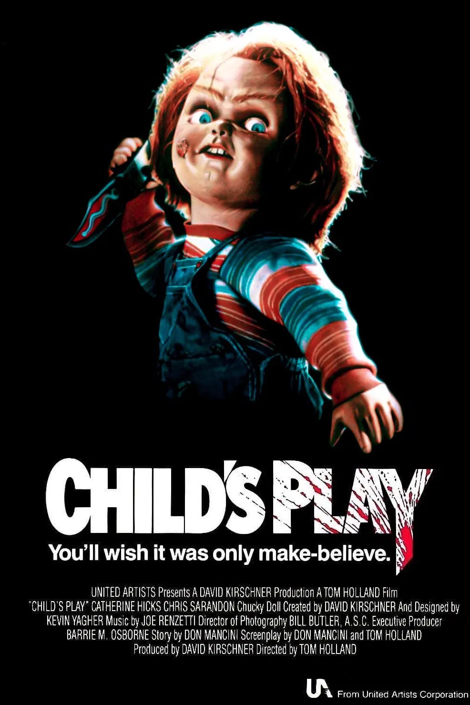

"Child's Play" is a horror film about a doll named Chucky, possessed by the soul of a serial killer, who terrorizes a young boy and his mother. The film begins with Charles Lee Ray, a notorious serial killer known as the "Lakeshore Strangler," being pursued by Detective Mike Norris in Chicago. After being shot, Ray uses a voodoo ritual to transfer his soul into a Good Guy doll just before dying in a toy store explosion. The doll, now named Chucky, is later purchased by Karen Barclay for her son Andy's birthday, unaware of its sinister nature. As Andy bonds with Chucky, the doll begins to exhibit violent behavior, leading to a series of murders, including the death of Andy's babysitter, Maggie. Despite Andy's claims that Chucky is alive and responsible for the killings, adults dismiss his warnings, believing he is merely imagining things. The tension escalates as Chucky's true nature is revealed, and he seeks to transfer his soul into Andy to regain a human form.
